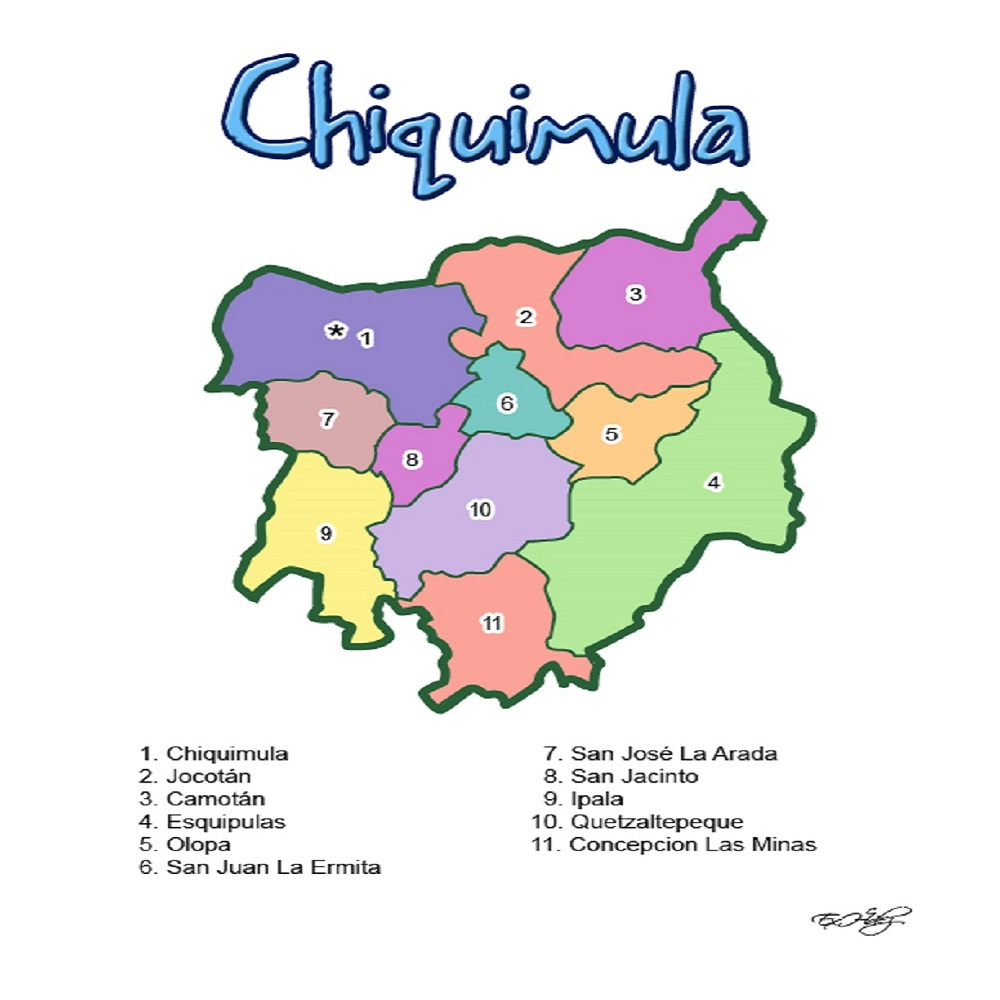
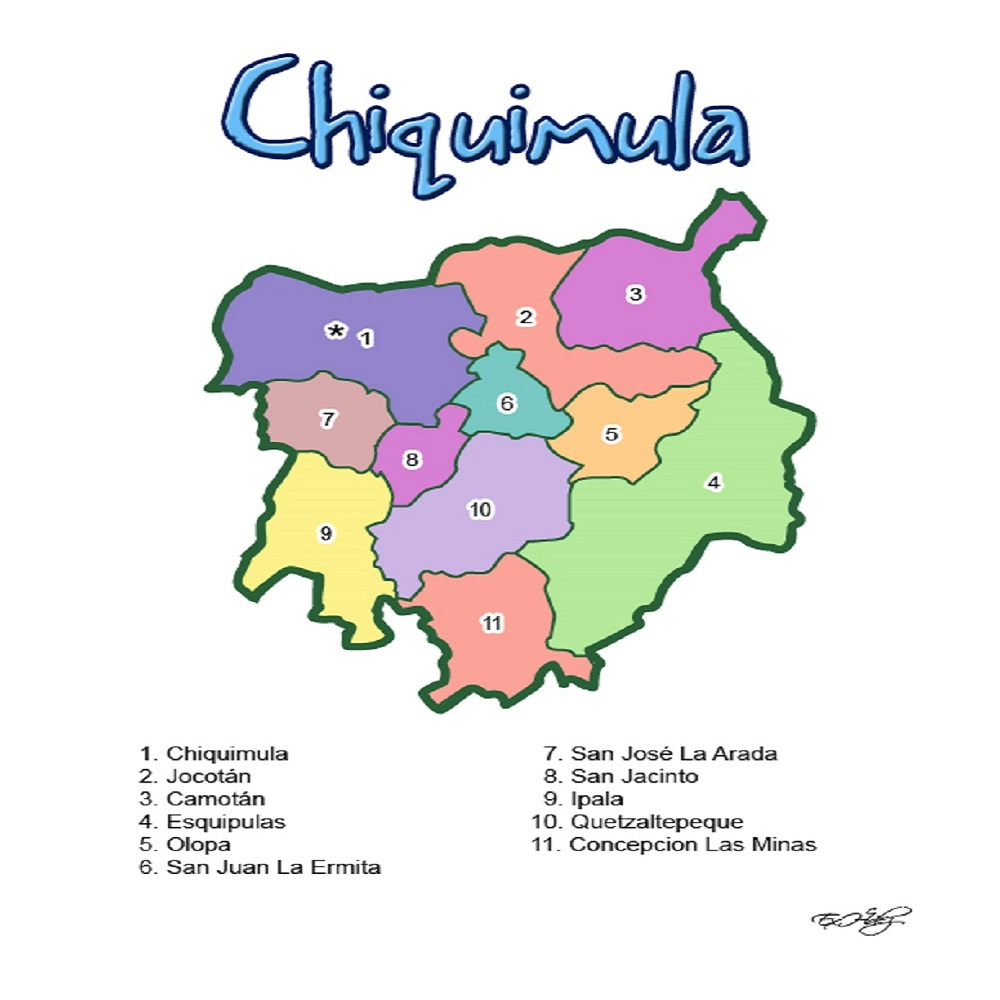

¡Nuestros Municipios!
 

Descripción
Actualmente, se encuentra a 168 km desde la ciudad de Guatemala. Cuenta con un área aproximada de 2,376 kilómetros cuadrados. Colinda al norte con Zacapa, al este con la República de Honduras, al sur con la República de El Salvador y el departamento de Jutiapa y al oeste con Jalapa.
Municipios:
1)Chiquimula.
2)Jocotán.
3)Esquipulas.
4)Camotán.
5)Quezaltepeque.
6)Olopa.
7)Ipala.
8)San Juan Ermita.
9)Concepción Las Minas.
10)San Jacinto.
11) José la Arada.
Historia del departamento de Chiquimula:
La población originaria de Chiquimula, antes de la llegada de los conquistadores en el siglo XVI, fue la etnia maya ch’orti’. Durante la Colonia, el territorio de era muy extenso, abarcaba parte de Honduras y El Salvador.
La primera región donde se asentó fue destruida por un huracán y terremotos en 1765. El asentamiento se encontraba en la parte oriente de la actual cabecera.